台中植牙權威,台中植牙推薦,台中植牙專科醫師,台中全口重建,台中門牙植牙,台中美學植牙,台中植牙價錢價格費用,台中植牙牙醫診所推薦,台中植牙評價心得感想 治療內容：下顎後牙植牙重建咬合成功案例@台中生活牙醫
醫師：台中 生活牙醫診所 植牙專科醫師 曾吉杉醫師
同步發表於 曾吉杉醫師的部落格
這位患者廖小姐左下長期缺牙使咬合功能單邊喪失，長期下來她深受只能用右邊咀嚼過度受力之苦，雖然很怕進行牙科相關治療但為求根治問題，下定決心尋求專業的台中口腔外科醫師曾吉杉醫師重建左下咬合。
 ▲#36第一大臼齒缺牙及#37第二大臼齒蛀空所以建議植牙，#38智齒拔除
▲#36第一大臼齒缺牙及#37第二大臼齒蛀空所以建議植牙，#38智齒拔除
第一次就診先拍全口2D X光片，廖小姐與曾醫師討論其困惱且想改善的問題，也有告知曾醫師本人其實很怕看牙齒，曾醫師就廖小姐的口腔狀況及 全口2D X光片先初步討論治療方向，並且以聊天的方式聊聊可能的相關療程，了解廖小姐的身體狀況。第一次諮詢讓廖小姐以輕鬆的方式認識植牙，在第二次療程幫廖小姐拍攝3D電腦斷層及取全口模型雕蠟並製作植牙手術定位板。
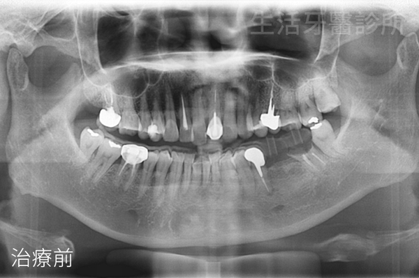
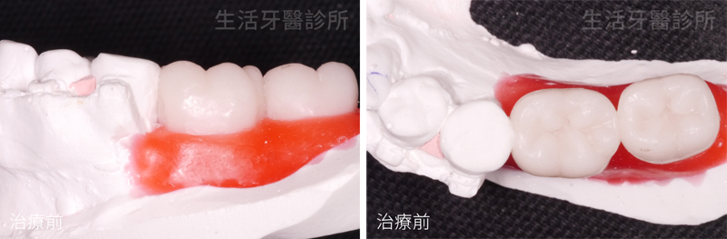
▲全口雕臘模型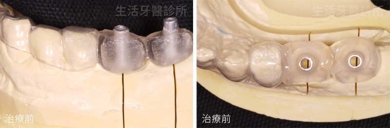
▲依照3D電腦斷層攝影及醫師判斷，製作個人植牙手術定位板
手術當天在左下局部麻醉下進行#37.38拔牙及#36.37植牙手術，植體植入後骨頭不足處補上人工骨粉、膠原蛋白，為求傷口癒合良好曾醫師使用6/0 NYLON 線縫合傷口。
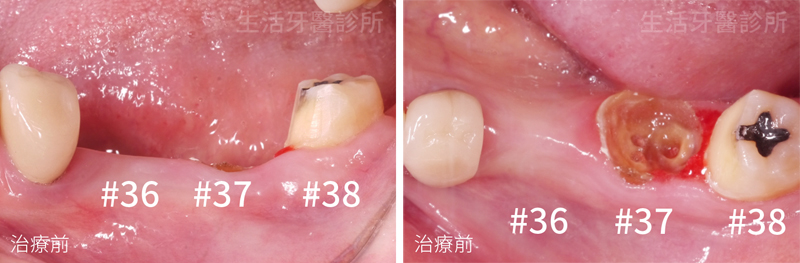
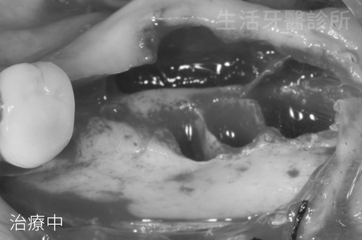
▲拔除#37.38並進行術區翻瓣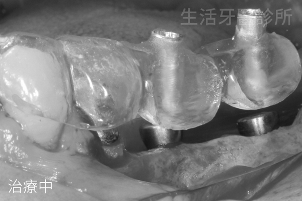
▲戴上術前訂製的植牙手術定位板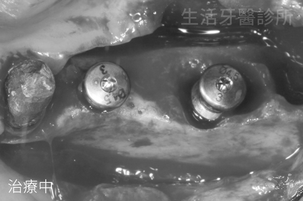
▲利用植牙手術定位板，將植體植入齒槽骨#36.#37最佳位置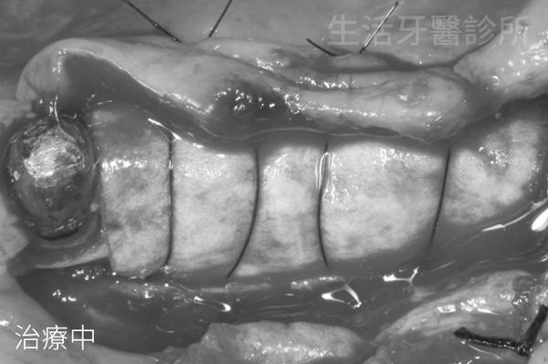
▲在植體周遭補上人工骨粉進行補骨添加膠原蛋白幫助傷口癒合，並覆蓋上再生膜
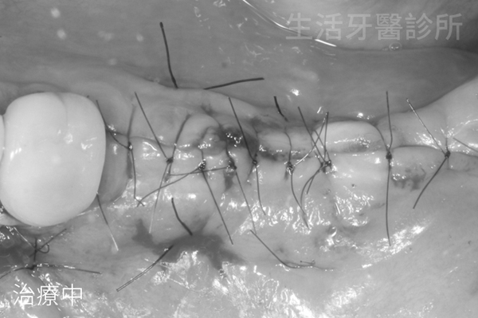
▲縫合術區，手術完成
植牙補骨後觀察約3-4個月的時間，因#36.37植牙處角化牙齦不足，為使未來假牙製作後好清理不塞食物，且考量足夠的牙肉具有保護植體牙周的功能，曾醫師再次在局部麻醉下進行角化牙齦增生術，縫合上膠原蛋白。
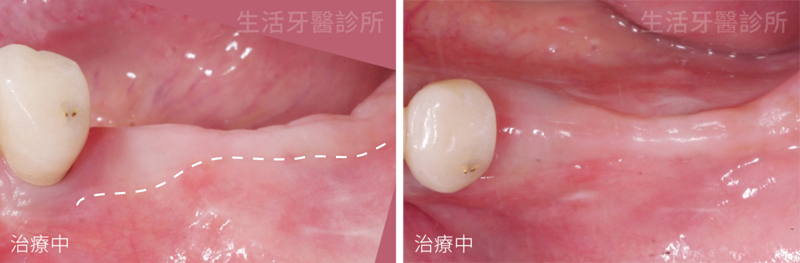
▲植牙手術傷口癒合後追蹤觀察發現角化牙齦不足(虛線以上偏白的牙齦)
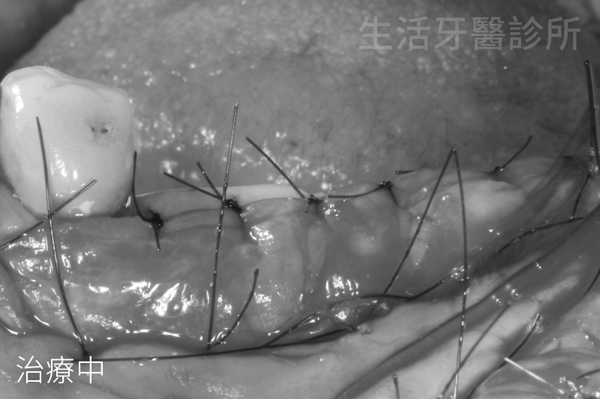
▲在角化牙齦不足處縫上膠原蛋白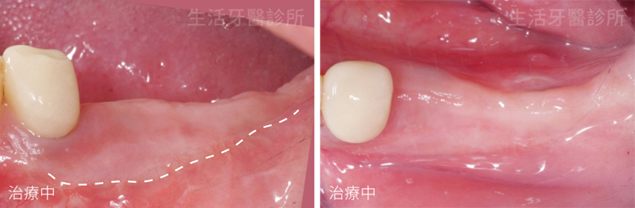
▲角化牙齦增生術傷口癒合後，角化牙齦增多了
等1-2個月此處牙肉狀況穩定後，進行第二階段植體露出術並取模製作臨時假牙
。
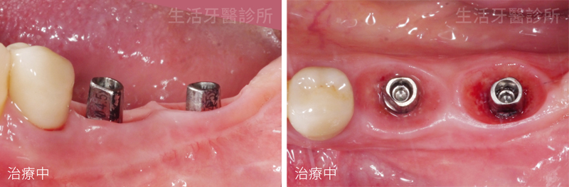
臨時假牙裝帶過程中，曾醫師不斷調整此處牙肉的型態及咬合狀況，讓廖小姐左邊原本沒有咬合慢慢適應咀嚼的功能，並製作漂亮自然的軟組織型態讓廖小姐好清理。
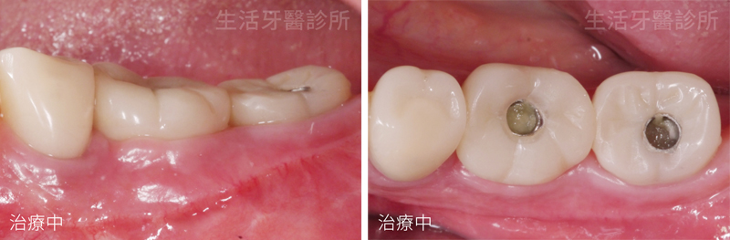
臨時假牙裝戴約1.5-2個月，確定廖小姐植牙處的牙肉及咬合狀況穩定後，曾醫師才將#36.37換成全瓷冠假牙，正式完成療程。
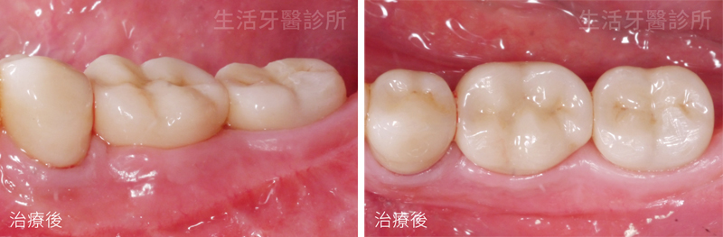
過程中不斷和廖小姐溝通建立彼此的信賴感，雖然療程時間比較漫長，但曾醫師在所有療程前都會耐心與病患溝通使之了解療程，所以病患都能理解且信賴曾醫師的處置。假牙完成後廖小姐左邊咬合功能恢復，出國旅遊時當地美食、大餐都可以放心享受，不侷限只有右邊可以進食，植牙清理更是如同自己的牙齒般自然好用。
治療前後比較
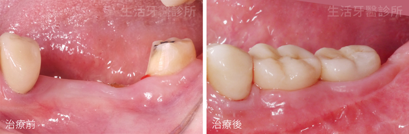
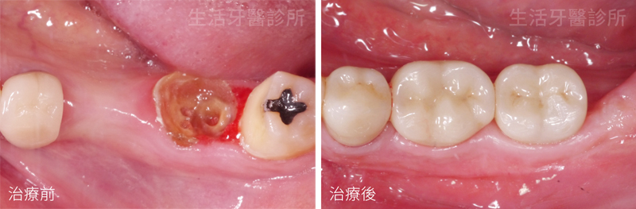
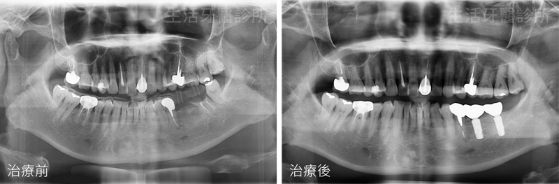
台中生活牙醫診所專業植牙專科團隊醫師擁有近二十年植牙成功經驗
資深植牙專科醫師親自診治
植體更全面提供五年安心保固
是台中植牙值得推薦的優質選擇